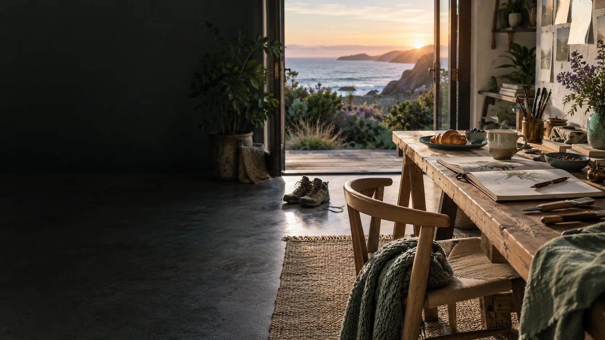

IMMERSION / RELATIONSHIPS, REST AND MAKING
A life around the session.
Sleep, food, nature, creative work, practical learning and meaningful responsibility provide experiences worth returning to. The arrangement follows the person’s actual life.
The agreement is practical.
A residential or locally based participant considers accommodation, meals, transport, care responsibilities, income, access and trusted support. The agreement records who provides each service, costs covered, contacts and review dates. A proposed facility becomes an arrangement when the relevant people agree.
Morning and evening are examples.
The source gives two sample daily rhythms: a morning pressure session with making or fieldwork later, and an evening session informed by the day’s experiences. Entry, preparation and exit occupy separate agreed windows around the qualifying interval.
A chosen activity closes the loop.
A reflection on resourcefulness might lead to a repair, a meal, a service visit or unfamiliar creative practice. The result supplies a question for another encounter. Workload review considers energy, recovery, responsibilities and enjoyment.
Contribution keeps its actual unit.
C-hours record verified voluntary human contribution in time units, with one verified hour recorded once. Communities choose recognition and reciprocal opportunities. Monetary budgets, paid work and assets retain their separate accounts.
Privacy continues outside Genesis.
A walk, lesson, meal or peer conversation has separately chosen capture permissions. Private and secret life retain space. A public work develops from the participant’s later selected release, rather than a continuous public broadcast.